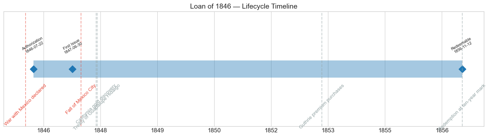
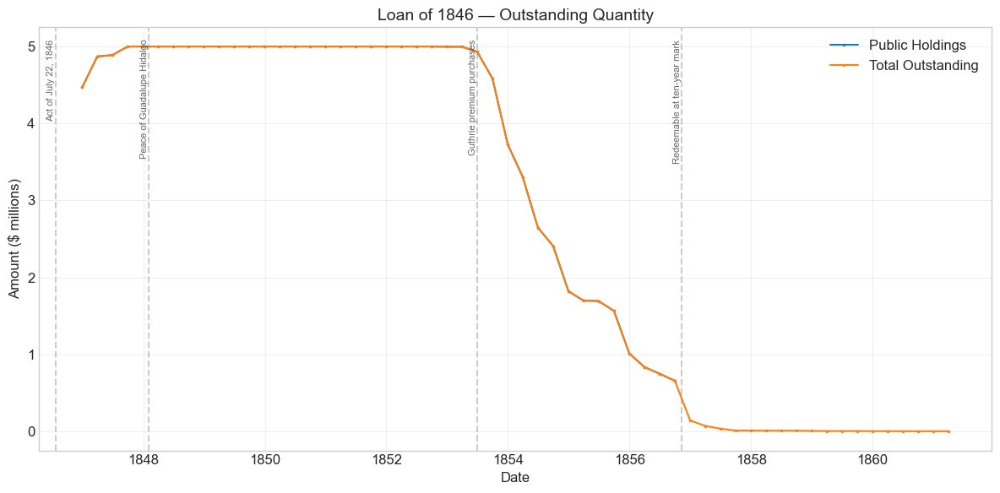
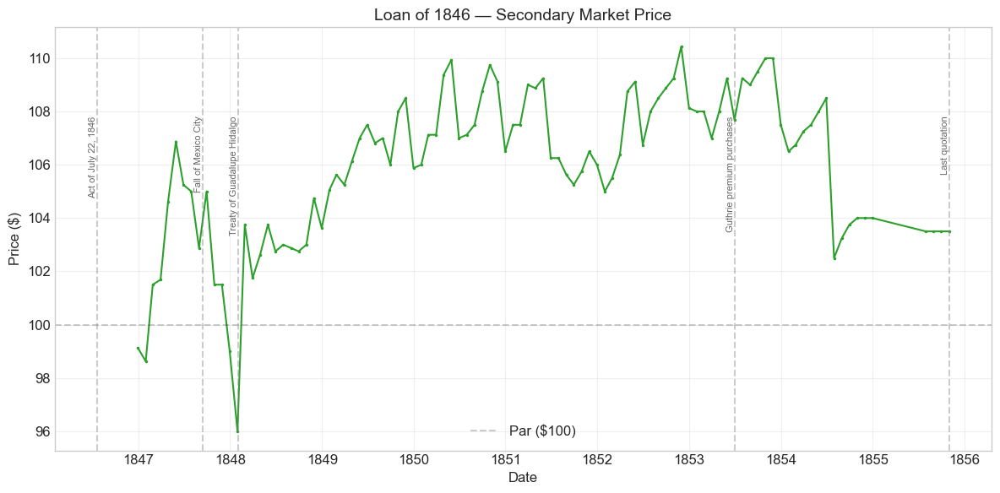
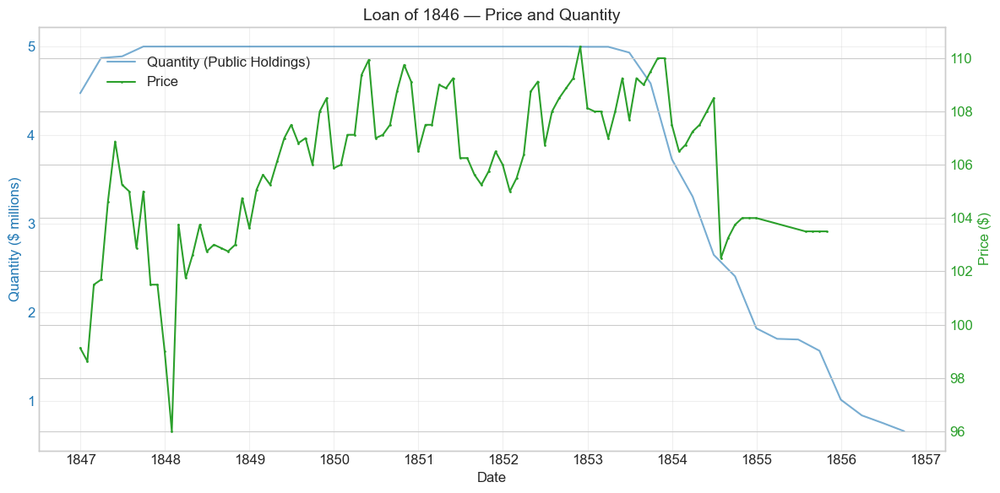
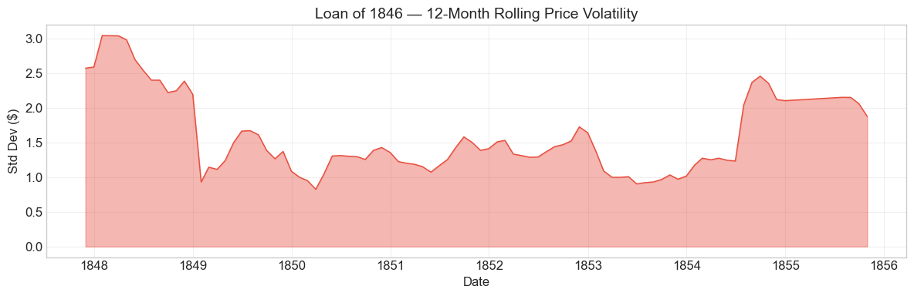

Bond Biography: Loan of 1846#
The Opening Move of Mexican War Finance#
An enhanced chapter from the Hall-Payne-Sargent US Federal Bond Database (2,857 issues, 1776–1960)
Bond ID (L1): 20086 | Category: Interest Bearing > Marketable > Long Term Bond
import pandas as pd
import numpy as np
import matplotlib.pyplot as plt
import matplotlib.patches as mpatches
import datetime
import warnings
warnings.filterwarnings('ignore')
plt.style.use('seaborn-v0_8-whitegrid')
plt.rcParams.update({'figure.figsize': (12, 6), 'font.size': 12,
'axes.titlesize': 14, 'axes.labelsize': 12})
# Load the bond database
store = pd.HDFStore('../data/BondDF.h5', mode='r')
BondList = store['BondList']
BondQuant = store['BondQuant']
BondPrice = store['BondPrice']
store.close()
BondQuant_T = BondQuant.transpose()
BondPrice_T = BondPrice.transpose()
bond_id = 20086
print(f'Loaded data for: Loan of 1846 (ID: 20086)')
/Users/thomassargent/anaconda3/lib/python3.9/site-packages/pandas/core/arrays/masked.py:60: UserWarning: Pandas requires version '1.3.6' or newer of 'bottleneck' (version '1.3.5' currently installed).
from pandas.core import (
Loaded data for: Loan of 1846 (ID: 20086)
Overview#
The Loan of 1846 was authorized by the Act of July 22, 1846, carried a 6.0% coupon payable semi-annually in coin, and ran for a term of ten years. During its lifetime on the secondary market, the bond’s average price was $105.93, ranging from $96.00 to $110.44 (based on 101 monthly observations from December 1846 to October 1855). Outstanding stock peaked at $5.00 million in September 1847, and the loan was retired at its ten-year mark: the database records it as redeemable after November 12, 1856, and the quantity series collapses to a few hundred thousand dollars of stragglers by the end of that year.
This bond is the opening move of Mexican War finance. When Congress declared war on Mexico on May 13, 1846 — following the April clash on the Rio Grande — the federal government was running the modest budgets of the 1840s and had only just emerged from the credit humiliation of 1842 (chronicled in the Loan of 1842 chapter). President James K. Polk and Treasury Secretary Robert J. Walker chose to pay for the war with debt rather than taxes, and the Act of July 22, 1846 was the first borrowing statute of the war: it authorized up to $10 million, to be raised either as Treasury notes or as a ten-year 6 per cent funded stock. In the event, only about half the authority — $4,999,149.45, to be precise, the figure preserved in the quantity series below — took the form of this stock; the balance of the war’s first cash needs was met with the short Treasury notes that appear elsewhere in the database as the Treasury Notes of 1846.
Why only half? The market’s answer, visible in this chapter’s data, is that the terms were not quite generous enough. A ten-year 6 per cent stock, offered at not less than par in the uncertain opening months of a foreign war, found buyers — but not eager ones: the database records a sale price of exactly 1.0 (par), and the first market quotations of December 1846–January 1847 sat fractionally below par. Walker learned the lesson. The war’s two later and much larger loans — the Loan of 1847 (Bond ID 20089, the following chapter, which owns the full war-finance story) and the Loan of 1848 — were written as twenty-year 6s, and both sold at premiums. The Loan of 1846 is thus the modest, slightly awkward opener of a war that the United States financed on steadily improving terms, and its short life gave it a distinctive ending: alone among the Mexican War trio, it matured into the surplus-rich mid-1850s and was paid off quietly at its ten-year mark, a decade before its longer siblings.
Historical Context#
The following major events occurred during this bond’s lifetime:
Date |
Event |
Category |
|---|---|---|
1846-05-13 |
War with Mexico declared |
War |
1846-07-22 |
Authorizing act (first war loan, $10 million) |
Legislation |
1846-07-30 |
Walker Tariff |
Legislation |
1846-08-06 |
Independent Treasury Act |
Legislation |
1847-03-09 / 1847-09-14 |
Veracruz landing / fall of Mexico City |
War |
1848-01-24 |
California gold discovery (Gold Rush follows) |
Other |
1848-02-02 |
Treaty of Guadalupe Hidalgo |
Other |
1853–1856 |
Treasury premium purchases out of surplus (Secretary Guthrie) |
Other |
1856-11-12 |
Redeemable at the ten-year mark; redemption follows |
Other |
The auto-generated draft of this chapter also listed the Panic of 1857 and the Civil War among the bond’s contexts. They belong to its siblings, not to it: by the time the Panic struck in August 1857, all but a few tens of thousands of dollars of this loan had already been paid off, and the residuals that linger in the accounts into 1861 are unpresented certificates, not a living security. The Loan of 1846’s world is the war itself and the golden decade that followed.
The first war loan#
The fiscal regime under which this bond was born is described at length in the Loan of 1847 chapter and is only sketched here. Polk’s administration fought the war without significant new taxation — the Walker Tariff of July 1846 actually cut duties on free-trade principles — and under the constraint of the Independent Treasury Act of August 1846, which required the government to receive and pay out its funds in specie through its own sub-treasuries, keeping public money out of the banks. War expenditure therefore had to be met by borrowing, and the Act of July 22, 1846 opened the sequence: $10 million, in Treasury notes or ten-year 6 per cent stock at the Secretary’s discretion, with the stock not to be sold below par.
Walker advertised for bids on the stock in the autumn of 1846, and the roughly $5 million placed came in at essentially par — the database’s Price Sold of 1.0. Contemporaries and later historians agree on the reading: with money still cheap but the war’s length and cost unknown, a ten-year 6 per cent bond offered no more than the market rate, and subscribers would not pay up for it. The quantity series shows $4.47 million outstanding by the end of December 1846 and the full $5.0 million by September 1847 (the database’s formal “first issue date” of June 30, 1847 reflects a bookkeeping convention; both the price and quantity series make clear the stock was in investors’ hands from late 1846).
The pull of the ten-year mark#
Unlike its twenty-year siblings, this bond’s premium had a visible expiration date. Every month after 1853 brought the November 1856 redemption — a payoff at par, 100 — closer, and a price of 108–110 had to amortize down toward 100 as the remaining coupons dwindled. The step down to 102½ in mid-1854, and the flat 103½ at which the series ends in October 1855, record that pull to par (on a float already thinned by Treasury buybacks, of which more below). The price series stops a year before redemption, as genuine quotations dried up on a nearly extinguished issue; the quantity series carries the story to its end, with the stock redeemed around its ten-year mark in 1856 and only unpresented residuals — ultimately about $1,000 — trailing into 1861.
# Bond Lifecycle Timeline
fig, ax = plt.subplots(figsize=(14, 4))
# Key dates
dates = [('Authorization', '1846-07-22'), ('First Issue', '1847-06-30'), ('Redeemable', '1856-11-12')]
events = [('War with Mexico declared', '1846-05-13', 'war'), ('Fall of Mexico City', '1847-09-14', 'war'), ('Treaty of Guadalupe Hidalgo', '1848-02-02', 'other'), ('California gold discovery', '1848-01-24', 'other'), ('Guthrie premium purchases', '1853-06-30', 'other'), ('Redemption at ten-year mark', '1856-11-12', 'other')]
import matplotlib.dates as mdates
from datetime import datetime
# Plot bond lifetime bar
d0 = datetime.strptime(dates[0][1], '%Y-%m-%d')
d1 = datetime.strptime(dates[-1][1], '%Y-%m-%d')
ax.barh(0, (d1 - d0).days, left=mdates.date2num(d0), height=0.3,
color='#1f77b4', alpha=0.4, label='Bond Lifetime')
# Mark key dates
for label, date_str in dates:
d = datetime.strptime(date_str, '%Y-%m-%d')
ax.plot(mdates.date2num(d), 0, 'D', color='#1f77b4', markersize=10)
ax.annotate(f'{label}\n{date_str}', (mdates.date2num(d), 0.25),
ha='center', va='bottom', fontsize=8, rotation=30)
# Mark historical events
colors = {'war': '#e74c3c', 'crisis': '#9b59b6', 'legislation': '#2ecc71', 'other': '#95a5a6', 'monetary': '#f39c12'}
for name, date_str, cat in events:
d = datetime.strptime(date_str, '%Y-%m-%d')
ax.axvline(mdates.date2num(d), color=colors.get(cat, 'gray'), alpha=0.5, linestyle='--')
ax.annotate(name, (mdates.date2num(d), -0.25), ha='center', va='top',
fontsize=10, rotation=45, color=colors.get(cat, 'gray'))
ax.set_yticks([])
ax.xaxis.set_major_formatter(mdates.DateFormatter('%Y'))
ax.set_title('Loan of 1846 — Lifecycle Timeline')
ax.set_ylim(-1, 1)
plt.tight_layout()
plt.show()

Bond Features#
Feature |
Detail |
|---|---|
Name |
Loan of 1846 |
Authorizing Act |
July 22, 1846 |
Authorization Date |
July 22, 1846 |
First Issue Date |
June 30, 1847 (database convention; stock was in investors’ hands from late 1846) |
Term |
10 years |
Redeemable After |
November 12, 1856 |
Coupon Rate |
6.0% |
Payment Frequency |
Semi-annual |
Callable |
No |
Payable in Coin |
Yes |
Authorized Amount |
$10 million under the act (notes or stock); ~$5 million issued as this stock |
Peak Outstanding |
$5.00 million (September 30, 1847) |
Price Sold |
1.0 (par) |
Two features define this bond against its siblings. First, the ten-year term. The Act of July 22, 1846 was drafted before anyone knew how the war-loan market would receive federal paper, and its ten-year stock at par proved the least attractive design of the war: subscribers took about $5 million of it at exactly 100, and the Treasury raised the rest of the act’s authority in short notes instead. The next Congress corrected course — the Act of January 28, 1847 offered a twenty-year 6 per cent stock, which sold at 101¼, and the Loan of 1848 at a still better premium. Read side by side, the three sale prices (100, 101¼, and higher again in 1848) are a neat little yield curve of improving wartime credit — and evidence that ten years of a 6 per cent coin coupon was worth less to the mid-century investor than twenty.
Second, the par sale. The database’s Price Sold of 1.0 marks the boundary of the era’s recovery: four years after the Loan of 1842 had to be forced out below par in a hostile market, the Treasury could sell a war loan at exactly 100 — no better, but no worse. It was the last federal loan of the era to go off without a premium.
# Display full bond features from database
row = BondList.loc[20086]
display_cols = [
"Treasury's Name Of Issue", 'Authorizing Act', 'Term Of Loan',
'First Issue Date', 'First Redemption Date', 'Final Redemption Date',
'Coupon Rate', 'Coupons Per Year', 'Callable', 'Coin',
'Authorized Amount', 'Price Sold'
]
print('Bond Features from Database:')
print('=' * 55)
for col in display_cols:
if col in row.index:
print(f' {col:<30} {row[col]}')
Bond Features from Database:
=======================================================
Treasury's Name Of Issue Loan of 1846
Authorizing Act July 22, 1846
Term Of Loan 10 years
First Issue Date 1847-06-30 00:00:00
First Redemption Date NaT
Final Redemption Date NaT
Coupon Rate 6.0
Coupons Per Year 2.0
Callable 0.0
Coin 1.0
Authorized Amount nan
Price Sold 1.0
Bond Quantity Over Time#
The bond’s outstanding quantity peaked at $5.00 million on September 30, 1847. Public-holdings data span from December 31, 1846 to September 30, 1856 (40 quarterly observations), with the “Total Outstanding” series carrying small unredeemed residuals forward to 1861.
# Bond quantity over time
fig, ax = plt.subplots(figsize=(12, 6))
for stype in ['Public Holdings', 'Total Outstanding']:
try:
s = BondQuant_T.loc[(20086, stype)]
s = s[s.notna()]
if len(s) > 0:
ax.plot(s.index, s.values / 1e6, marker='.', markersize=3, linewidth=1.5, label=stype)
except KeyError:
pass
ax.set_title('Loan of 1846 — Outstanding Quantity')
ax.set_xlabel('Date')
ax.set_ylabel('Amount ($ millions)')
ax.legend()
ax.grid(True, alpha=0.3)
events = {'1846-07-22': 'Act of July 22, 1846', '1848-02-02': 'Peace of Guadalupe Hidalgo', '1853-06-30': 'Guthrie premium purchases', '1856-11-12': 'Redeemable at ten-year mark'}
for date_str, label in events.items():
d = pd.Timestamp(date_str)
ax.axvline(d, color='gray', alpha=0.4, linestyle='--')
ax.text(d, ax.get_ylim()[1]*0.97, label, rotation=90, va='top', ha='right', fontsize=8, alpha=0.7)
plt.tight_layout()
plt.show()

Quantity Analysis#
The quantity series is the simplest of the Mexican War trio, and its simplicity is the story.
Placement (1846–1847). Nearly the whole loan went out at once: $4.47 million was outstanding by the end of December 1846, within weeks of the autumn subscription, and the total edged up to its peak of $4,999,149.45 by September 1847. There is none of the two-year climb that marks the Loan of 1847’s series — no conversion privilege was feeding notes into this stock. What was sold in the opening months of the war was all there ever was, a hair under the $5 million the Secretary offered in stock form (the act’s remaining authority having gone out as Treasury notes).
The plateau (1848–1852). For five years the balance sits motionless at $4.999 million, its coin coupons paid semi-annually while the war ended, gold poured out of California, and the Treasury’s finances swung into surplus. The bond was not callable, so even a government flush with revenue could not redeem it early at par — it could only buy it back at market prices.
Premium purchases (1853–1856). That is what it did. From mid-1853 the balance falls steadily: $4.93 million in June 1853, $3.73 million by year-end, $1.82 million by the end of 1854, $1.01 million by the end of 1855, $0.66 million by September 1856. This is the same surplus-revenue program described in the Loan of 1847 chapter — Secretary James Guthrie using the tariff surpluses of the prosperous early 1850s to repurchase government stock in the open market at premiums, both to reduce the debt and to push idle sub-treasury coin back into the money market. For this bond the premiums were more modest than the 117–123 paid on the twenty-year loans, precisely because the approaching 1856 maturity kept the price closer to par: the Treasury was paying roughly 102–108 to retire a bond it would otherwise redeem at 100 within a few years — buying time value, and monetary relief, more than debt relief.
Redemption at the ten-year mark (1856). The stock became redeemable after November 12, 1856, and the series shows the payoff concentrated there: from $656,100 in September 1856 the total outstanding drops to $140,500 at year-end and $34,000 by mid-1857. Alone among the Mexican War loans, this one reached its contractual maturity in the sunshine — a Treasury still in surplus (the Panic of 1857 was months away when the redemption was substantially complete) paid it off at par in coin, on schedule. The residuals that dwindle through 1858–61 to a final $1,000 are certificates never presented for payment — the usual archaeology of a nineteenth-century loan account, not a blemish on it.
Secondary Market Prices#
Overall Statistics (1846-12-31 to 1855-10-31): Mean $105.93, Range $96.00–$110.44, Std Dev $2.82, 101 observations.
By Period:
Period |
Approx. Range |
Character |
|---|---|---|
Dec 1846 – May 1847 |
98⅝ → 106⅞ |
Below-par debut; climb on military success |
Jun 1847 – Jan 1848 |
96–105¼ |
Wartime plateau; year-end 1847 sag to the lifetime low of 96 |
Feb 1848 – 1853 |
101¾ → 110.44 |
Peace, gold, surpluses; the long premium climb |
1854 – Oct 1855 |
102½–108½ |
Pull to par as the 1856 maturity approaches; thinning quotations on a shrinking float |
The debut deserves attention because it is the mirror of its siblings’. The Loan of 1847 opened at 104½–105⅜, comfortably above its 101¼ sale price; this loan opened at 99⅛–98⅝, fractionally below its par sale price. Buyers of the war’s first loan spent their first two months underwater — a small fact, but the clearest evidence in the database that the ten-year stock at par was priced with no margin to spare, and the reason the Treasury never used the design again. The below-par stretch was brief: by February 1847 the bond was above 101, and apart from the two months around the turn of 1848 it never closed below par again.
# Annotated price chart
fig, ax = plt.subplots(figsize=(12, 6))
s = BondPrice_T.loc[(20086, 'Average')]
s = pd.to_numeric(s, errors='coerce').dropna()
if len(s) > 0:
ax.plot(s.index, s.values, marker='.', markersize=3, linewidth=1.5, color='#2ca02c')
ax.axhline(100, color='black', alpha=0.2, linestyle='--', label='Par ($100)')
ax.set_title('Loan of 1846 — Secondary Market Price')
ax.set_xlabel('Date')
ax.set_ylabel('Price ($)')
ax.legend()
ax.grid(True, alpha=0.3)
events = {'1846-07-22': 'Act of July 22, 1846', '1847-09-14': 'Fall of Mexico City', '1848-02-02': 'Treaty of Guadalupe Hidalgo', '1853-06-30': 'Guthrie premium purchases', '1855-10-31': 'Last quotation'}
for date_str, label in events.items():
d = pd.Timestamp(date_str)
ax.axvline(d, color='gray', alpha=0.4, linestyle='--')
ax.text(d, ax.get_ylim()[1]*0.97, label, rotation=90, va='top', ha='right', fontsize=8, alpha=0.7)
plt.tight_layout()
plt.show()

# Price and Quantity — dual-axis chart
fig, ax1 = plt.subplots(figsize=(12, 6))
# Quantity (left axis)
for stype in ['Public Holdings', 'Total Outstanding']:
try:
q = BondQuant_T.loc[(20086, stype)]
q = q[q.notna()]
if len(q) > 0:
ax1.plot(q.index, q.values / 1e6, color='#1f77b4', alpha=0.6, label=f'Quantity ({stype})')
break
except KeyError:
pass
ax1.set_xlabel('Date')
ax1.set_ylabel('Quantity ($ millions)', color='#1f77b4')
ax1.tick_params(axis='y', labelcolor='#1f77b4')
# Price (right axis)
ax2 = ax1.twinx()
p = BondPrice_T.loc[(20086, 'Average')]
p = pd.to_numeric(p, errors='coerce').dropna()
if len(p) > 0:
ax2.plot(p.index, p.values, color='#2ca02c', marker='.', markersize=2, label='Price')
ax2.set_ylabel('Price ($)', color='#2ca02c')
ax2.tick_params(axis='y', labelcolor='#2ca02c')
ax1.set_title('Loan of 1846 — Price and Quantity')
ax1.grid(True, alpha=0.3)
fig.legend(loc='upper left', bbox_to_anchor=(0.1, 0.9))
plt.tight_layout()
plt.show()

Detected Price/Quantity Events#
The following significant movements were auto-detected in the data, with causal interpretation:
Date |
Type |
Change |
Interpretation |
|---|---|---|---|
1848-02 |
price spike |
+8.1% |
Peace. The Treaty of Guadalupe Hidalgo was signed on February 2, 1848, and the price snapped from its lifetime low of 96 back to 103¾ within the month. The January low itself was the war’s one financial scare — heavy remaining government paper supply and year-end money-market stringency, the same squeeze that briefly pushed the new Loan of 1847 down to par (see that chapter). The spike is thus half peace dividend, half relief of a temporary squeeze. |
1854-07 |
price drop |
-5.5% |
The step from 108½ to 102½ has no single headline behind it, and we decline to invent one. Three forces plausibly combine: the arithmetic pull to par of a premium bond within thirty months of a fixed par redemption; the general tightening of the New York money market in mid-1854 after the easy-money years; and — because Guthrie’s buybacks had already cut the float nearly in half — quotations growing thin, so that a repricing that accumulated gradually could be recorded in one step. |
1854-12 |
quantity decrease |
-24.4% |
Guthrie’s premium purchases in full stride: the outstanding balance fell from $2.40 million (September) to $1.82 million (December) as the Treasury’s surplus was applied to open-market retirement. |
1855-12 |
quantity decrease |
-35.3% |
The same program approaching completion — $1.56 million (September 1855) down to $1.01 million (December). By now the Treasury was retiring a bond within a year of its par redemption; the purchases shade into an early wind-down of the loan. |
A caution parallel to the one in the Loan of 1847 chapter applies to this bond’s final stretch. From July to October 1855 the price stands at exactly 103½ for four consecutive months, and then the series simply stops, a year before redemption. With well under $2 million left outstanding and the Treasury itself the dominant buyer, genuine transactions had become scarce; the flat closing quotations look like standing dealer marks on a nearly extinguished issue, and the absence of movement in 1855 should not be over-read any more than the movements of 1854.
Price Volatility#
Maximum drawdown: -10.2% (from the peak of $106.88 on May 31, 1847 to the trough of $96.00 on January 31, 1848)
Average monthly return: 0.056%
By the standards of this database the Loan of 1846 was a placid security, and the numbers above say why: its entire maximum drawdown — top to bottom — is smaller than a single bad month for the War of 1812 sixes, and it unfolded over just eight months before being erased in one. The drawdown window brackets the bond’s only real crisis, the winter 1847–48 money squeeze, and its resolution at Guadalupe Hidalgo. Note what the bond missed by dying young: its twenty-year siblings went on to draw down 30 per cent into the secession crisis of 1861, while this loan was safely extinguished five years before Fort Sumter. A shorter term meant a lower price ceiling in the premium years — it peaked at 110.44 while the Loan of 1847 touched 123 — but also a life lived entirely inside the republic’s most serene fiscal decade.
The rolling-volatility chart below shows the two ends of that story: the elevated volatility of 1847–48 (war, squeeze, and peace repricing), a long quiet middle through the premium years, and a final ripple in 1854–55 as the pull to par and thinning quotations produced the step-changes discussed above.
# Rolling volatility (12-month window)
p = BondPrice_T.loc[(20086, 'Average')]
p = pd.to_numeric(p, errors='coerce').dropna()
if len(p) >= 12:
rolling_std = p.rolling(window=12).std().dropna()
fig, ax = plt.subplots(figsize=(12, 4))
ax.fill_between(rolling_std.index, rolling_std.values, alpha=0.4, color='#e74c3c')
ax.plot(rolling_std.index, rolling_std.values, color='#e74c3c', linewidth=1)
ax.set_title('Loan of 1846 — 12-Month Rolling Price Volatility')
ax.set_xlabel('Date')
ax.set_ylabel('Std Dev ($)')
ax.grid(True, alpha=0.3)
plt.tight_layout()
plt.show()
else:
print('Insufficient data for rolling volatility (need >= 12 observations)')

Issuance, Distribution, and Redemption#
The bond was originally sold at 1.0 — par, $100 per $100 of face value.
How it was sold. Secretary Walker offered the ten-year stock by public advertisement for bids in the autumn of 1846, under the act’s requirement that it not go below par, and roughly $5 million was awarded at essentially that floor. The Washington house of Corcoran & Riggs, whose dominant role in the 1847 and 1848 placements is described in the next chapter, took the war’s later loans; the database does not record who took this one. At par for only ten years, the stock was worth taking, not fighting over, and the Treasury left the other half of the act’s $10 million authority to be raised in short Treasury notes as expenditure demanded. Precise subscriber-level allocations are not something we press here; the aggregate facts — par sale, roughly half the authority in stock, the remainder in notes — are the well-documented core.
How it lived. Once placed, the loan settled into the life of a standard premium investment of the early 1850s, its semi-annual coin coupons paid punctually through war and peace alike. It was too small and too short to be the vehicle of the era’s great portfolio movements — the European demand for American federal bonds that returned after Corcoran’s London placement of the 1848 loan went to the twenty-year loans — but it participated fully in the premium plateau, and from 1853 its largest single buyer was the issuer itself, as Secretary Guthrie’s surplus-revenue purchases retired the majority of the float at market premiums.
How it ended. The stock was redeemable after November 12, 1856 — ten years on — and the Treasury, still in surplus, paid it off at par in coin around that date: the outstanding balance falls from $656,100 in September 1856 to $140,500 at year-end and to $34,000 by mid-1857. There was no refinancing, no conversion, no drama — the first federal loan of the Mexican War was simply, punctually extinguished, the first of the trio to complete the full arc from authorization to retirement. The few thousand dollars of certificates never presented for payment dribble through the accounts until about $1,000 remains in 1861, the ordinary tail of a nineteenth-century loan.
Implications and Legacy#
The Loan of 1846 is a small bond with a definite place in the arc of American fiscal history: it is the hinge between the credit recovery of the 1840s and the confident war finance of 1847–48.
It was the test shot. When Congress declared war in May 1846, no one knew what the market would pay for federal war debt — the last war loans, in 1813–14, had gone off at deep discounts, and the peacetime Loan of 1842 below par. The July 1846 act’s cautious design (ten years, par floor, notes as a fallback) and its middling result (half the authority taken in stock, at exactly par, with the first quotations dipping below) gave Walker precisely the market intelligence the later, larger loans were built on. The twenty-year term and premium sales of 1847 and 1848 were the lesson of 1846 applied.
It marks the floor of the improving sequence. Sold at 100 where its successors sold at 101¼ and better, the Loan of 1846 anchors one of the tidiest patterns in the antebellum database: a country that borrowed on improving terms as its war went on. Set against 1812–14, when each successive war loan was sold on worse terms than the last, the reversal measures what three decades of punctual payment — and the revenue recovery after 1843 — had bought. The war’s opening loan was its hardest sell; everything afterward was easier.
It rehearsed, in miniature, the era’s debt management. Non-callable premium debt in a time of surplus posed a problem the 1850s Treasury solved with open-market purchases at premiums — and this bond, maturing soonest, shows the program’s logic most cleanly, since the Treasury’s buybacks here shaded directly into early redemption. The loan’s final act made the complementary point: redemption at par, in coin, at the ten-year mark, out of surplus revenue, before the Panic of 1857 could interfere. Of the Mexican War trio, only this bond got the ending the antebellum fiscal ideal prescribed — borrowed for the emergency, serviced without fail, and retired on schedule from peacetime surplus. Its siblings, maturing in 1867–68, would have their coin promises tested by secession and the greenback era; the Loan of 1846 was spared the examination, having already passed its own.
And it is a lesson in the price of term. The bond’s whole market life — the par sale where the twenty-year loans earned premiums, the 110 ceiling where its siblings touched 123, the quiet pull back to par after 1853 — is a sustained demonstration that in the 1850s the scarce thing was not the government’s 6 per cent promise but the number of years one could hold it. Investors of the era wanted long duration in federal coin bonds and paid visibly for it. The Treasury, for its part, learned to sell them exactly that.
References#
Primary and Documentary Sources#
U.S. Congress, An Act authorizing an issue of treasury notes and a loan, July 22, 1846 (9 Stat. 39).
Annual Reports of the Secretary of the Treasury, 1846–1857 (Walker, Meredith, Corwin, Guthrie, Cobb).
Bayley, R. A. (1881). The National Loans of the United States, From July 4, 1776 to June 30, 1880. Washington: Government Printing Office. (The standard loan-by-loan compendium; its account of the Mexican War loans underlies the terms cited here.)
Scholarly Works#
Payne, J., Szőke, B., Hall, G. & Sargent, T. (2025). “Costs of Financing US Federal Debt: 1791–1933.” Quarterly Journal of Economics. (Source database for all price and quantity series in this chapter.)
Hall, G. & Sargent, T. — companion studies of U.S. fiscal history using the federal bond database.
Cohen, H. (1971). Business and Politics in America from the Age of Jackson to the Civil War: The Career Biography of W. W. Corcoran. Westport: Greenwood. (On Corcoran & Riggs and the marketing of the Mexican War loans.)
McGrane, R. C. (1935). Foreign Bondholders and American State Debts. New York: Macmillan. (Background on the European market for American securities in the 1840s.)
General Histories#
Dewey, D. R. (1918). Financial History of the United States, 6th ed. New York: Longmans, Green and Co.
Studenski, P. & Krooss, H. E. (1952). Financial History of the United States. New York: McGraw-Hill.
Enhanced Bond Biography generated from the Hall-Payne-Sargent Bond Database. Narrative enrichment draws on Bayley (1881), Cohen (1971), McGrane (1935), Dewey (1918), and Studenski & Krooss (1952). All price and quantity figures are computed directly from the database; qualitative claims are kept to well-established facts, and thinly quoted stretches of the price series are flagged as such.